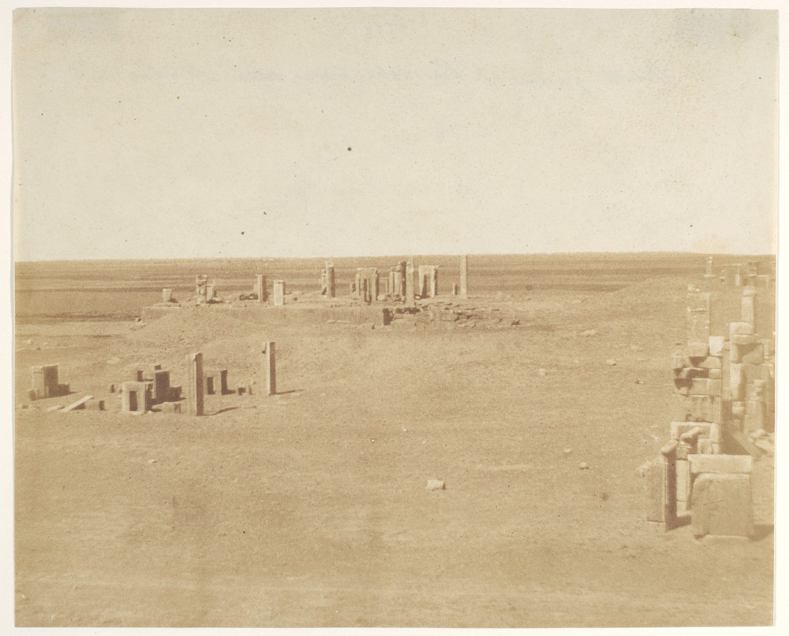

Unit 2 · Persepolis · Lesson 4
Discovering Persepolis: from travellers’ sketches to scientific excavation
How did the investigation of Persepolis change between 1602 and today, and what did each change do to the evidence?
Year 11 Ancient History · Present with → or space · Read on a phone with R

1 · From travellers to excavators · I do — think aloud · stage 3 of 4
Scientific excavation: the Oriental Institute of Chicago, 1931–39
- 11931–34 · Ernst Herzfeld, with the architect Friedrich KrefterPlanned clearing, plans and photographs. In 1932 the Apadana’s east stairway is uncovered: buried under debris, it is well preserved, with traces of paint that soon vanished.
- 21933 · two great findsKrefter finds the Apadana’s gold and silver foundation tablets; the team finds tens of thousands of Fortification Tablets and fragments in the fortification wall.
- 31935–39 · Erich SchmidtExcavates the Treasury; photographs the site from the air (1935–37); publishes the results as Persepolis I–III (1953–70).
What did this stage add to our evidence, and what did it damage?
Buried reliefs, inscriptions and archives found and recorded with plans, photographs and published reports.
Clearing removed the layers, which survive only in the records; paint traces lost; finds taken to Chicago.

In thirteen hours of flying we succeeded in mapping more than four hundred ancient sites in the plain of Persepolis, a task of years if carried through on the ground.
Erich Schmidt, Flights over Ancient Cities of Iran (Chicago: University of Chicago Press, 1940), p. 7
2 · Reliable for what? · We do — compare · then gesture vote
Then and now: a drawing of 1711 and two photographs

Schmidt’s aerial photographs of 1935–37 are not free to copy: see them in ISAC’s free catalogue, Persepolis and Ancient Iran (1976).
What has stayed the same? Doorframes and columns still stand; the terrace still sits against the hillside above the flat plain.
What has changed? In 1704 and 1858 the buildings rise from earth and rubble; by 2009 the floor is cleared, the column bases laid out, and repairs are under way.
What can a photograph show that a drawing cannot? Everything in front of the camera at one moment, with no artist choosing what to put in; but the photographer still chooses the view, and old prints fade.
Gesture vote: “The drawing shows exactly what the terrace looked like in 1704.” Only partly. It fits the photographs in outline: standing columns and doorframes on a half-buried terrace. But it is not exact: the artist chose to include and place people and a donkey, and nothing under the ground is shown.
Images: De Bruijn 1711 (Public domain) · Luigi Pesce / The Met (CC0 1.0) · Hansueli Krapf (CC BY-SA 3.0). Full details on the last slide.
2 · Reliable for what? · We do — cold call · use the OVPRL routine on page 2 of your booklet
Class OVPRL: what is De Bruijn’s drawing reliable for?
Origin: who made it, when and where?
Published in 1711 by the Dutch artist Cornelis de Bruijn in his travel book · an engraving based on drawings he made at the site during a stay of about three months (November 1704 – January 1705)
Value: what can it tell us, for which inquiry?
For an inquiry into how the site has changed: what stood above ground about 1704, before any digging · also how a European artist presented the ruins
Purpose: why was it made, and for whom?
To illustrate his book for European readers: letters on the plate point to his description of each building
Reliability: how far can we trust it, and for what?
Reliable for the general layout above ground: drawn on the spot over months, and it matches Pesce’s 1858 photograph in outline · less so for small details (Morier found his drawings of the sculptures “in general correct in outline” but “imperfect in the details”), buried parts, and what he added or tidied
Limitations: what can it not tell us?
What lay buried (a second row of figures, dug up by Morier in 1811; the east stairway, uncovered in 1932), colour, what the buildings were for
De Bruijn’s drawing is reliable for the general layout of the ruins standing in 1704–05, but not for small details or for anything buried, because he could draw only what he saw above ground; his view matches later photographs in outline, and a later visitor found his drawings of the sculptures correct in outline but imperfect in detail.
On comparing Le Bruyn’s, Chardin’s, and Niehbuhr’s drawings with the sculptures, I found them in general correct in outline, but imperfect in the details of dress, arms, &c.
James Morier, A Second Journey through Persia (London, 1818), p. 76 [Le Bruyn = De Bruijn; Chardin = Jean Chardin, a French traveller of the 17th century]
Check · 3 minutes · cold call
Early excavators often took finds abroad. Was that acceptable in the 1930s? Is it now?
- 1933: the Oriental Institute team finds the Fortification Tablets in the fortification wall
- 1936–37: most go to Chicago on loan, for study and translation
- 2018: a United States court rules that the tablets cannot be seized to pay a court judgment against Iran
- Today: the tablets are photographed in fine detail and shared online
Acceptable then? Acceptable now? Give one reason for each, and say acceptable to whom.
A judgement for each time, with a reason. Then: Iran lent the tablets for study, and study in Chicago led to published translations. Now: many argue finds belong in their own country; a long loan left the tablets caught in another country’s court case; digital images allow study without moving them. It asks: acceptable to whom?